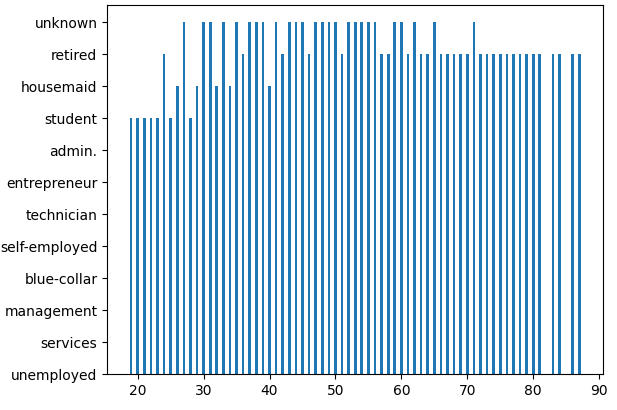
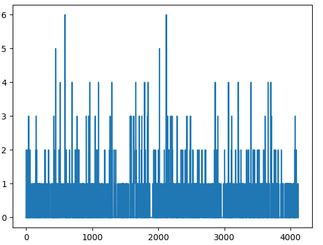
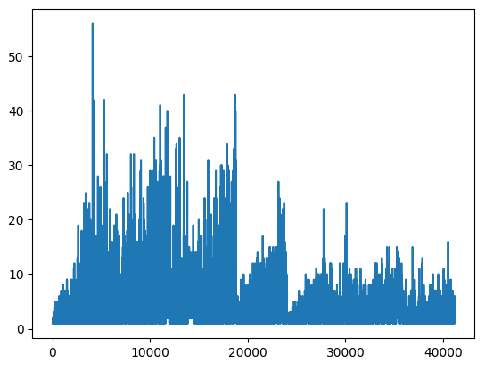
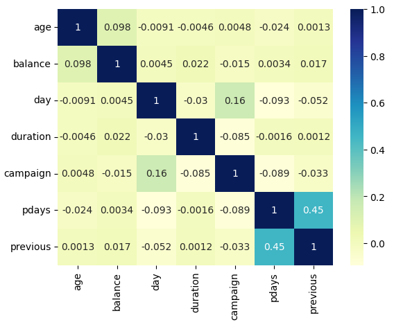
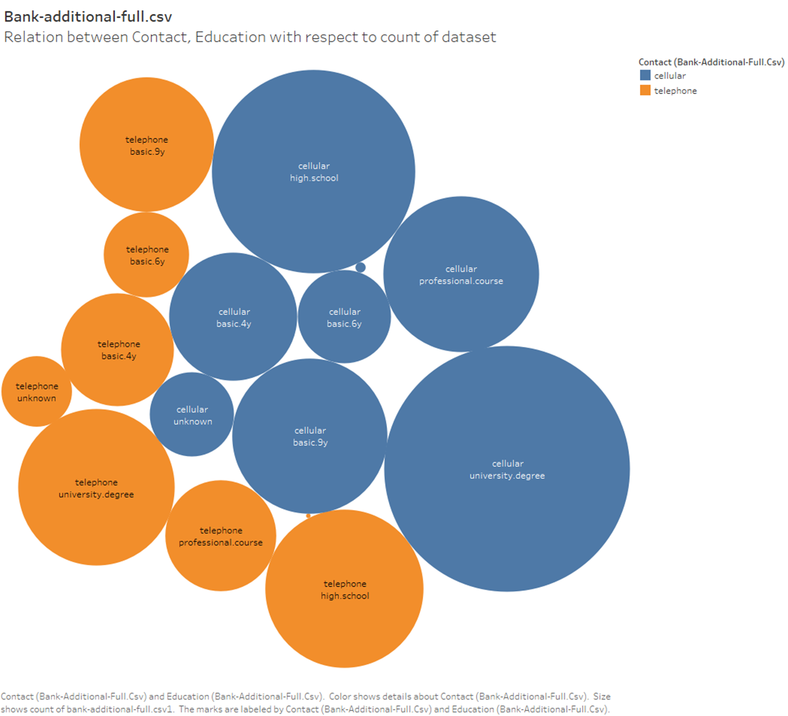
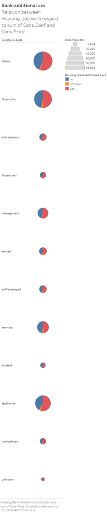
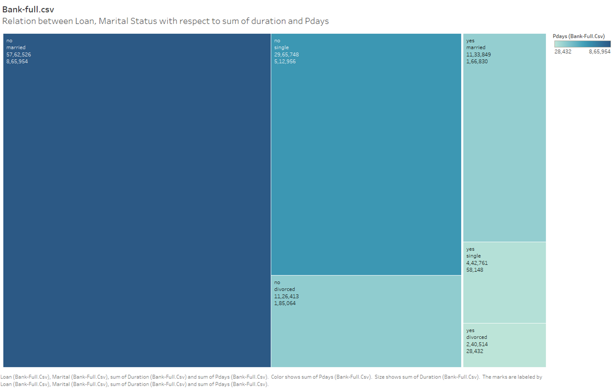
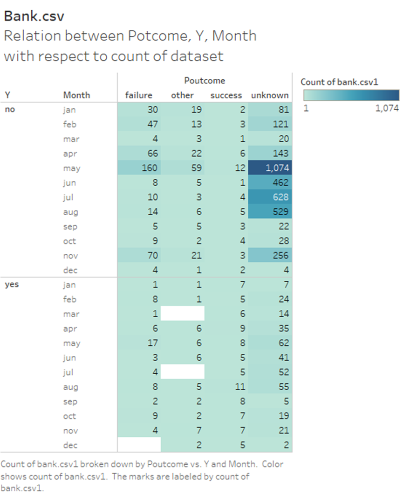

Charts
Python Charts
Client Job Distribution by Age

Trend of Previous Client Contacts

Campaign Contact Frequency per Client

Correlation Matrix of Client Attributes

Tableau Charts
Contact and Education Distribution

Housing and Job Influence on Consumer Indices

Impact of Loan and Marital Status on Duration and Pdays

Housing and Job Influence on Consumer Indices
